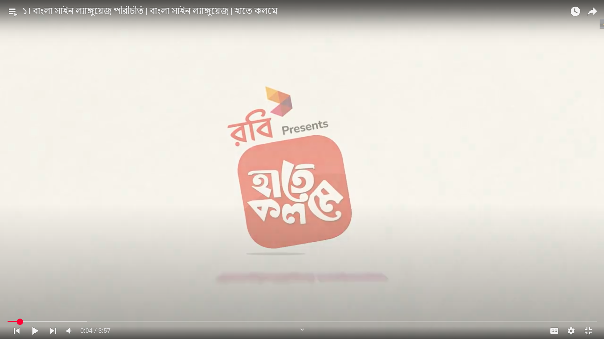

বাংলা সাইন ভাষা শেখার জন্য নিচের সংস্থানগুলি ব্যবহার করুন। এই পাঠ্যক্রম এবং টিউটোরিয়ালগুলি আপনাকে সাইন ভাষা শিখতে সাহায্য করবে।
এই পাঠ্যক্রমে বাংলা সাইন ভাষার মৌলিক বিষয়গুলি শিখুন। বর্ণমালা, সংখ্যা এবং সাধারণ শব্দগুলি অন্তর্ভুক্ত।
দেখুন
দৈনন্দিন জীবনে ব্যবহৃত সাধারণ বাক্য এবং অভিব্যক্তি শিখুন। এই পাঠ্যক্রমটি বাস্তব জীবনের পরিস্থিতিতে সাইন ভাষা ব্যবহার করতে সাহায্য করবে।
দেখুনআপনি যদি ইতিমধ্যে মৌলিক বিষয়গুলি জানেন, তাহলে এই উন্নত পাঠ্যক্রমটি আপনার দক্ষতা আরও উন্নত করতে সাহায্য করবে।
দেখুনএই টিউটোরিয়ালে বাংলা সাইন ভাষার প্রাথমিক পাঠ অন্তর্ভুক্ত রয়েছে।
টিউটোরিয়াল দেখুন